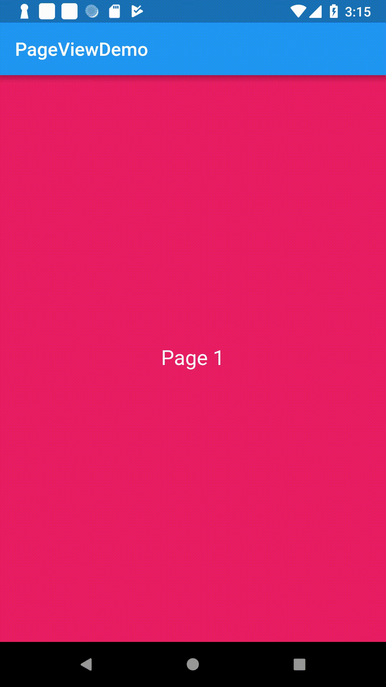
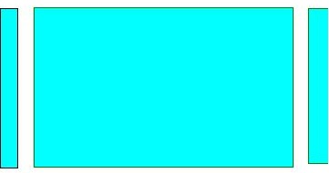

A scrollable list that works page by page. PageView almost similiar to a ListView. In PageView each children is shown at full view of the parent viewport. That means one page per view. You can make part of the next and previous page visible so that user knows that beyond the scroll there are more items. We will learn how to do that.
Each child of a PageView is forced to be the same size as the viewport.
Similar to ListView, a PageView has three constructor:
It has a children parameter that takes a fixed length of list of widgets, each widget speicies a page. Here is an example:
PageView(
children: <Widget>[
Container(
color: Colors.blue,
child: Center(child: Text("Page 1")),
),
Container(
color: Colors.pink,
child: Center(child: Text("Page 2")),
),
Container(
color: Colors.red,
child: Center(child: Text("Page 3")),
),
]
)
The above code will produce output similar to the below demo:
Similar to ListView, this constructor has itemCount and itemBuilder property. If itemCount is null or unspecified, then it will create a infinite list of pages.
The above demo can also be achieve with the builder constructor like the following:
List<Map<String, dynamic>> items;
@override
initState(){
super.initState();
items = [
{
"title": "Page 1",
"color": Colors.red,
},
{
"title": "Page 2",
"color": Colors.yellow,
},
{
"title": "Page 3",
"color": Colors.pink,
},
];
}
// in build method --
PageView.builder(
itemCount: items.length,
itemBuilder: (context, position){
var item = items[position];
return Container(
color: item['color'],
child: Center(child: Text(item['title']))
);
},
)
By default the PageView widget creates a horizontal scrolling list of pages. But you can change it to make it vertical list of pages. To change the scrolling direction to vertical use scrollDirection property and set it to Axis.vertical.
PageView( children: [ // Widgets ], scrollDirection: Axis.vertical )
If you scroll the page, the next page will slide in and will automatically fit its position in a way that the edge of the page touches with the edge of its parent viewport. That means the page will automatically fixed itself to be viewed fully. You cannot make a page visible by half and show half of the next page side by side within the screen. This behaviour is called pageSnapping. By default it is set to true. If you set it to false, the scrolling behaviour will be like scrolling a normal list like in ListView.
In other words, Page snapping allows us to keep the page at intermediate values.
PageView(
children: <Widget>[
// Add children here
],
pageSnapping: false,
)
Now you can make a page stay on the screen at any position by scrolling.
Just like in ListView, the PageView also supports scrollPhysics. Read ListView to know more about scroll physics.
PageView(
children: <Widget>[
// Add children here
],
physics: BouncingScrollPhysics(),
)
The property controller takes a PageController instance. The controller can be used to handle the page view in different ways.
PageController controller;
@override
initState(){
controller = new PageController();
}
// in build method --
PageView(
children: <Widget>[
// Add children here
],
controller: controller,
)
The controller takes initialPage parameter which sets the initial page when the widget is added in the widget tree.
controller = new PageController(initialPage: 2);
The above statement will initially load the page at index 2.
The controller also takes viewportFraction parameter which specifies how much space each page should occupy. By default viewportFraction is set to 1, which means the page will be scaled to fit its viewport. You can set the value that is above 0 and below 1, to indicate the scaling factor of the page. Note that the in the cross axis the page will always be streatched. For example, if the viewportFraction is set to 0.5, the page will occupy the half of its parent viewport in its main axis while it will stretch to its cross axis. In the main axis the page will be positioned centered of its parent viewport. The remaining space 0.25 at the left will be occupied by the previous page and 0.25 space will be occupied by the next page if there is any. When you scroll the pages, the next or previous page will positioned at the center of the viewport automatically. This way you can always make a small part of the next page or previous page visible while showing the current page fully at center.
controller = new PageController(initialPage: 2, viewportFraction: 0.8);
You can get the current page number from this property. Whenever user scrolls to a new page, this property is updated with the current page number.
print(controller.page); // Prints the current page index
You can attach a listener to the controller. This listener is called whenever the user scrolls to a new page. Here is an example:
PageController controller;
@override
initState(){
super.initState();
controller = PageController(viewportFraction: 0.6);
items = [
{
"title": "Page 1",
"color": Colors.red,
},
{
"title": "Page 2",
"color": Colors.yellow,
},
{
"title": "Page 3",
"color": Colors.pink,
},
];
controller.addListener((){
print(controller.page);
});
}
Now if you scroll to the next page, you will get output like the following:
flutter: 0.028440475463867188 flutter: 0.06532516479492187 flutter: 0.11185150146484375 flutter: 0.16921666463216145 flutter: 0.2255589803059896 flutter: 0.283685302734375 flutter: 0.346185302734375 flutter: 0.4003519694010417 flutter: 0.4545186360677083 flutter: 0.5003519694010417 flutter: 0.546185302734375 flutter: 0.583685302734375 flutter: 0.608685302734375 flutter: 0.6253519694010417 flutter: 0.733446628292908 flutter: 0.7740466978294858 flutter: 0.8079674978424838 flutter: 0.8364510497567924 flutter: 0.8604669461801261 flutter: 0.8807854500270506 flutter: 0.8980277383311057 flutter: 0.9126936934757397 flutter: 0.9251922035043588 flutter: 0.9358621073769486 flutter: 0.9449823918802925 flutter: 0.9527860785069995 flutter: 0.9594698832753183 flutter: 0.9651982165129958 flutter: 0.9701102230448738 flutter: 0.9743247072337948 flutter: 0.9779418505653489 flutter: 0.9810470919643137 flutter: 0.9837138538996896 flutter: 0.9860043599319253 flutter: 0.9879719029588973 flutter: 0.9896624432024221 flutter: 0.991115036660595 flutter: 0.9923632106210786 flutter: 0.9934359343165575 flutter: 0.9943578608946211 flutter: 0.9951501794691886 flutter: 0.9958312169433128 flutter: 0.9964165816822136 flutter: 0.9969196975436266 flutter: 0.9973521812652361 flutter: 0.9977239303959294 flutter: 1.0
As you can see, it prints so many intermediate values from current page index 0 to the next page index 1. When you scroll to page index 1 to page index 2, it will print intermediate values between 1 and 2. These intermediate numbers specifies the position of the next page that specifies how much the next page has scrolled to.
Discards any resources used by the object.
@override
dispose(){
controller.dispose();
super.dispose();
}
Changes which page is displayed in the controlled PageView.
controller.jumpToPage(2);
When you call this method, it will not smooth scroll to the target page, instead it will instantly show the page. If you attach a addListener you can see, it directly jumps to the target page and doesn't produce any intermediate values.
flutter: 0.0 flutter: 2.0
animateToPage(int page, {Duration duration, Curve curve})
Unlike jumpToPage, this method will animates to the target page.
controller.animateToPage(2, duration: Duration(seconds: 1), curve: Curves.easeIn);
If you attach a addListener and print controller.page, you will see it generates intermediate values from current page index to target page index.
You should use duration and curve as parameter to define the animation duration and the curve of the animation. These two properties are optional.
It will animate to the next page. You should provide duration and curve value for the animation.
controller.nextPage(duration: Duration(seconds: 1), curve: Curves.easeIn);
It will animates to the previous page. You should provide duration and curve value for the animation.
controller.previousPage(duration: Duration(seconds: 1), curve: Curves.easeIn);